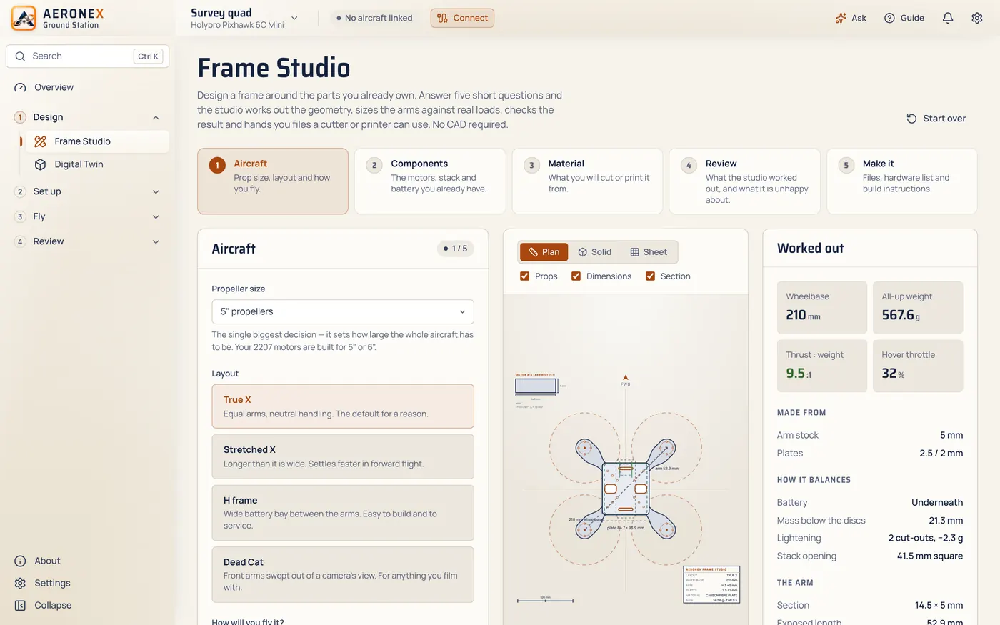

AERONEX · Frame Studio

1 Design
Draw the frame around the parts you already own
Answer five short questions and Frame Studio works out the geometry, sizes the arms against real loads and checks the result. No CAD needed.
- Files a laser cutter, CNC or 3D printer can use, with 1:1 part drawings
- Hardware list, build instructions and a build report in one PDF
- One click copies the design into the simulator